xx
xxxx xx xxxx xxxxx xxxx
xx xx xx xx xx xx xx xx
xxxx xx xx xxxx xx xx xx xx xxxx xx xxxx
xx xx xx xx xx xx xx xx xx xx xx
xx xx xx xx xx xxxxx xx xx xx xx
xxxxx xx xx xx xx xx xx xxxxx xx xxxxxx
xx xx xx xx xx xx xx xx xx xx xx xx xx
xx xx xx xx xx xx xx xx xx xx xx xx xx xx
xxxxx xxxx xxxxxx xxxx xxxxx xxxxx xxxx xxxx
H o M e P a G e
Fotos
--------+
|
--------+---------------------------------------------------------
Tenha paciência, demora pra carregar...
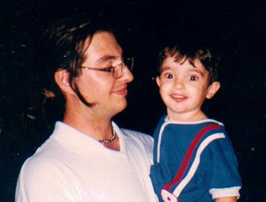
Meus amigos na virada do ano (Rodrigo e Igor) Jan/98.
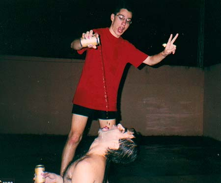
Meus amigos na virada do ano (Luciano alimentando o Ricardão) Jan/98.
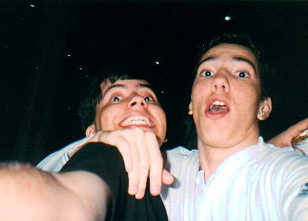
Momento de felicidade etílica. (Osvaldo e Luciano) Num lembro :)
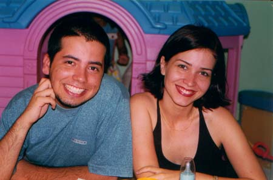
Aniversário da Filha da Cláudia (Laura). (Osvaldo e Arísia "e a sua mamadeira" :))
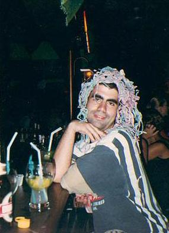
Uma amiga nossa. (Ricardão).
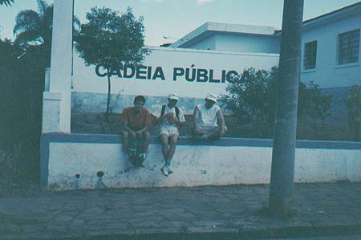
Fim de uma longa jornada. Mirassol. (Marcus, Gustavinho e Luiz) Num lembro :)
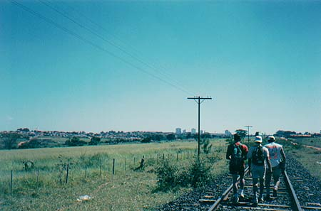
A Jornada. Ao fundo, Mirassol. (Marcus, Gustavinho e Luiz) Num lembro :)
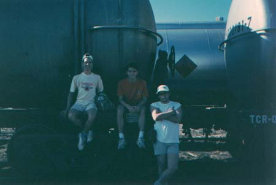
O Gustavinho, o Marcus (supernovo) e o Luiz bem magrinho. Num lembro :)
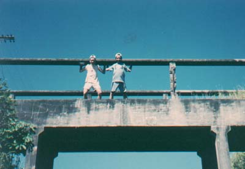
Dois idiotas numa ponte indo para Mirassol. (Osvaldo e Gustavinho)
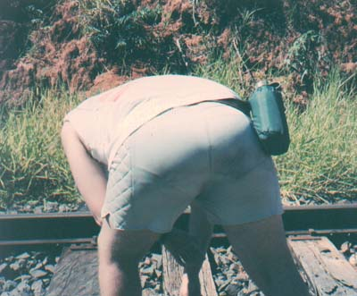
Foto erótica tirada na ida para Mirassol, o modelo é o Luiz.
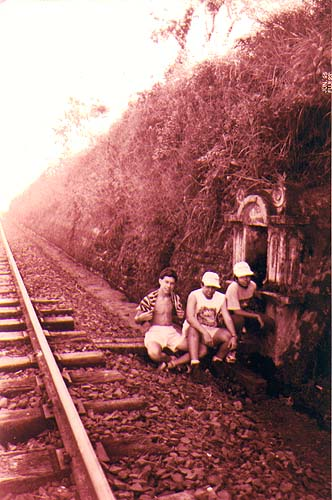
Foto histórica: Gustavinho, Luiz e Osvaldo na Pica do Dr. Balduíno.
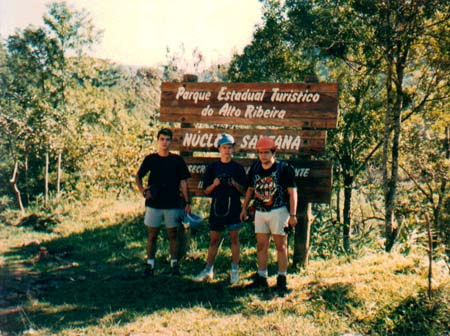
Nem precisa falar onde hehe :) (Daniel "D&D", Gustavinho e Luiz
"SZSOMOHZ3!"). Num lembro :)
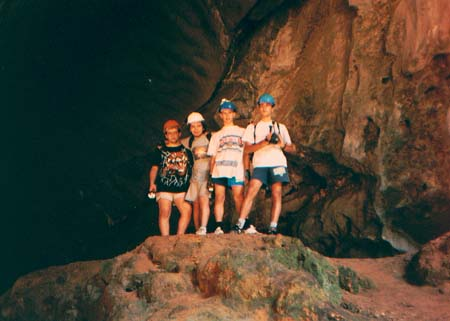
Eu e meus eternos amigos: Luiz, Osvaldo, Gustavinho e Daniel. (PETAR)
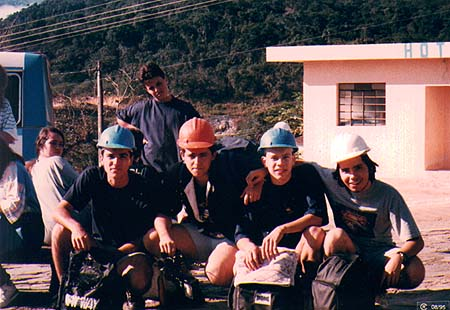
Os espeleólogos: Daniel, Luiz, Gustavinho e Osvaldo. (PETAR)
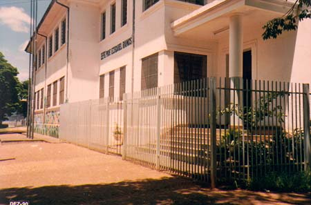
Saudades. Ezequiel Ramos.
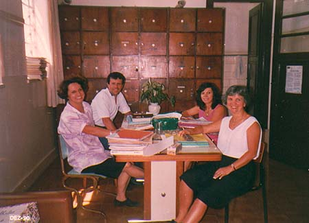
Essa é raridade, sala de professores do Ezequiel Ramos.
Da esqueda pra direita: Não lembro, Zé Carlos (meu mentor e professor de
matemática), Alice (Geografia, eca!) e Iracema (Ciências!!!).
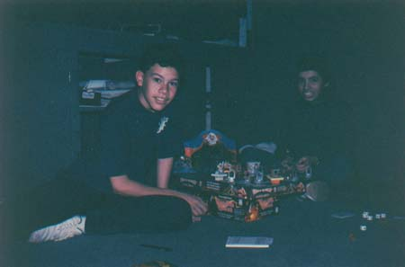
Um dos poucos registros de uma partida de RPG. (Gustavinho e Osvaldo)
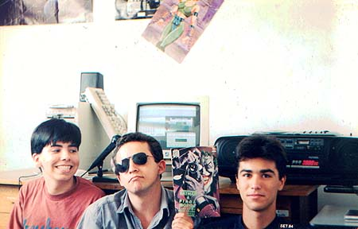
Rádio Babilônia FM 66,6 mhz (Osvaldo, Luiz e Daniel) Set/94.
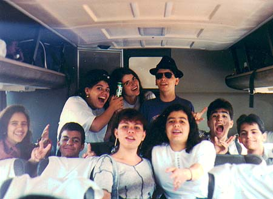
Da direita pra esquerda: Ni, Daniel e Osvaldo (óculos).
O Resto é a turma de Tele. (Holambra)
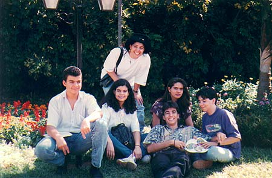
Da direita pra esquerda: Osvaldo, Daniel, a gostosa que o
Daniel não ficou e o resto num lembro. (Holambra)
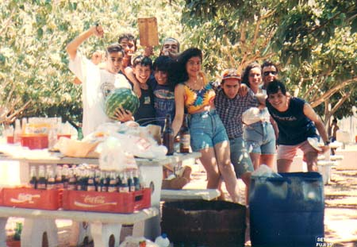
Festa no clube pinheiro. (Pra simplificar: Turma de
Telecomunicações do Philadelpho)
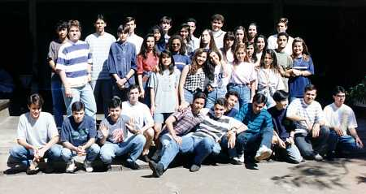
Turma de PD do Philadelpho. Acho que foi final de 94 e eu não vou
colocar o nome de todo mundo aqui. :)
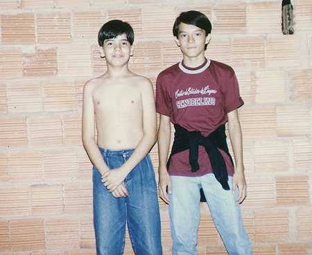
Eu (maaaagro) e o Marquim (passivo) numa construção. :)
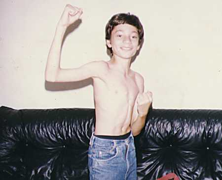
Luizão na única foto disponível dele sem camisa. :)
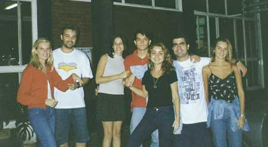
Ida pra Camboriú: Cris, Cris, Daniela, Marquim, Gra,
Ricardão, e Claudinha(?). Eu estou atrás da máquina.
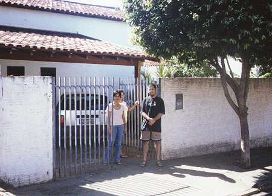
Minha ex-casinha em Rio Preto, minha mãe, minha sobra
(aquele braço sobrando na foto), eu e o meu TipoZero.
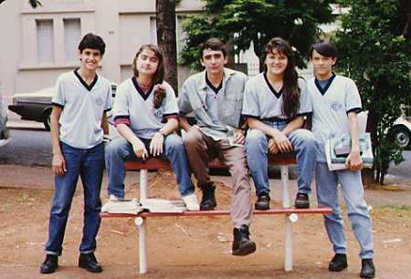
Saída da escola Ezequiel Ramos: Ricardo Bandeira (que não
foi convidado mas saiu na foto, Gra (novinha ainda), Luciano,
Camila (irmã do Marquim), Marquim e eu (atrás da máquina pra
variar). To impressionado com minha memória pra nomes :)
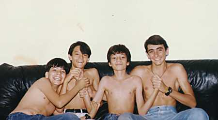
Sexo grupal: Eu (vejam a barriga), Marquim (olhem que cabelo bicha),
Luizão (tirando a foto por livre e espontânea coação) e Luciano.
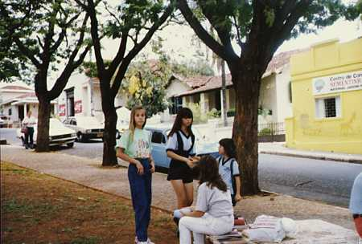
Praça do Ezequiel Ramos: A Casa ao fundo é da minha tia e eu
morei na casa ao lado (pintada de amarelo que na foto é uma
escolinha pra crianças). A loira foi uma das minhas paixões
estudantis.
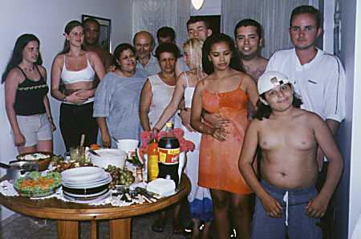
A família buscapé passando reveillon em Camboriú no apê
do Marquim.
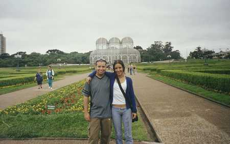
Eu e minha sister na frente do Jardim Botânico. Ela já tava
com a idéia besta de virar hippie na cabeça.
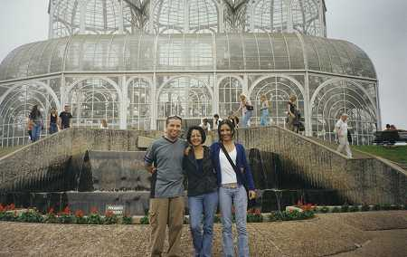
Eu, mami e Dani :) (seção fotos família).
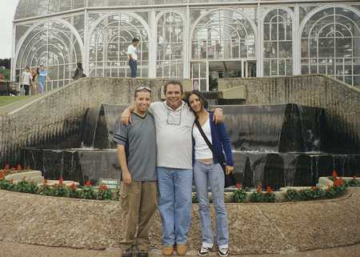
Eu, Seu Santana (meu paizão) e a Dani (de novo).
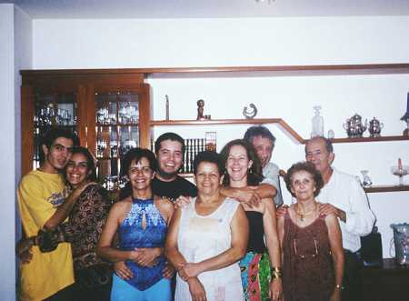
Reunião no apê da minha vó: O ex-ex-ex-ex-(?)-namorado da Dani,
a própria Dani, Mami, eu (com uma bela barba), a minha sogra, a
Tutu, o ex-ex-ex-ex-(?)-namorado/noivo/marido dela, minha vó,
o atual ex-namorado/noivo/marido dela e a Elaine (que tá atrás da
máquina).
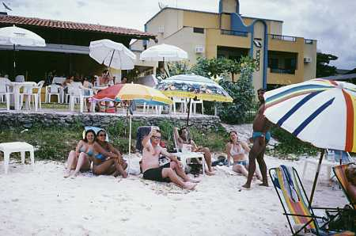
A vida que eu pedi! Praia de Bombinhas (litoral catarinense)
defronte a um restaurante que serve camarãozinho na areia.
As amigas da Elaine (Simone e Débora), o Marcos (primo da Elaine),
Eu (sentadão), a Dona Teresa (sogra) sentada atrás do Marcos, Regiane
e o marido dela (Douglas).
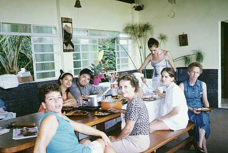
Chácara do meu tio Aymar em Bauru: Nicéia, Elaine, Euzão, Vovó,
Simone (sentada no banco), Ana Silvia e a tia Neiva.
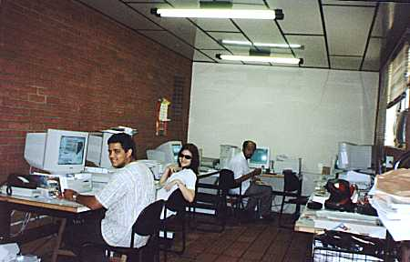
DLMRozani: O Lu, a Arísia (com seus óculos Jaqueline Onásis), e
lááá no fundo (esse scanner é uma porcaria) é o César.
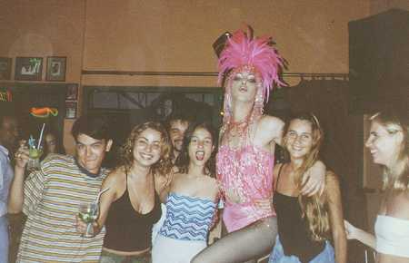
Camboriú: Marculino, Gra, Daniela (com a blusa feita de lona de
piscina), uma ex-namorada do Marculino, a Claudinha, a Cris (no
cantinho) e Eu (atrás da máquina).
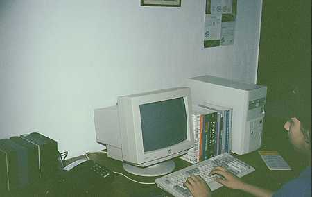
Eu com meu super-primeiro-computador-intel 386SX com 2MB de RAM
e HD de 80MB e um drive de 5 1/4.
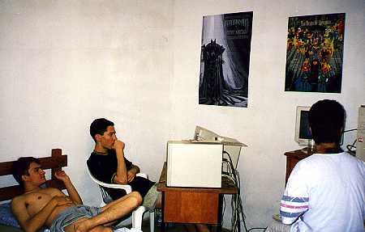
Marquim, Luciano, Ricardão e Eu (atrás da máquina) no meu ex-quarto
em Rio Preto Jogando Doom/Heretic/DoomII/DukeNukem3D em 'rede' serial
RS-232.
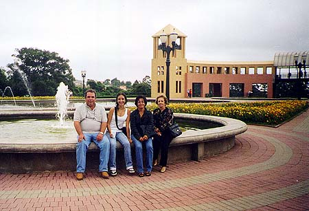
Foto rara da minha família: Papai, Dani, Mamãe e Vovó.
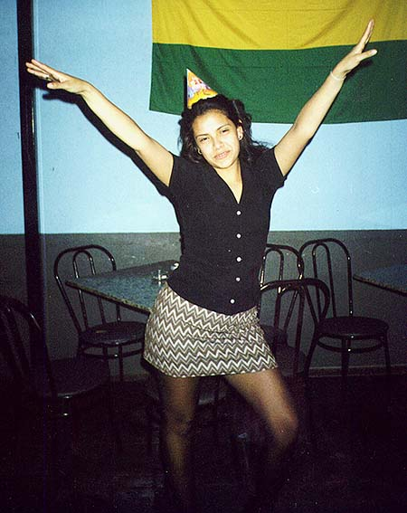
A minha noiva Elaine! (alegre, né?) :)